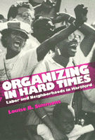

<body bgcolor="#FFFFFF" text="#000000" link="#0000FF" vlink="#CC0000" alink="#CC0000"><center><hr width="350" size="1" align="center" noshade>One of America's poorest cities copes with economic restructuring<hr width="350" size="1" align="center" noshade><p><a href="https://cdcshoppingcart.uchicago.edu/Cart/ChicagoBook.aspx?ISBN=9781566391559&&PRESS=temple" target="_top">Buy this book!</a> | <a href="https://cdcshoppingcart.uchicago.edu/Cart/Cart.aspx?PRESS=temple" target="_top">View Cart</a> | <a href="https://cdcshoppingcart.uchicago.edu/Cart/Cart.aspx?PRESS=temple" target="_top">Check Out</a></p><p></p></center><!--none//--><h1>Organizing In Hard Times</h1>
<H2>Labor and Neighborhoods In Hartford</H2>
<h3>Louise B. Simmons</h3>
<P>cloth 1-56639-155-5 $89.50, Apr 94, <FONT COLOR=#990033>Available</FONT>
<br>paper 1-56639-156-3 $34.95, Apr 94, <FONT COLOR=#990033>Available</FONT>
<br>Electronic Book 1-43990-419-7 $35.95 <FONT COLOR=#990033>Available</FONT>
<BR> 200 pp
5.5x8.25
1&nbsp;figure
</P><p>In 1990, Hartford, Connecticut, ranked as the eight poorest city in the country by the census; the real estate market was severely depressed; downtown insurance companies were laying off and the retail department stores were closing; public services were strained; and demolition sites abandoned for lack of funds pockmarked the streets. Hartford's problems are typical of those experienced in numerous U.S. cities affected by a lingering recession.
<p>The harsh economic times felt throughout the city's workplaces and neighborhoods precipitated the formation of grassroots alliances between labor and community organizations. Coming together to create new techniques, their work has national implications for the development of alternative strategies for stimulating economic recovery.
<p>Louise B. Simmons, a former Hartford City Councilperson, offers an insider's view of these coalitions, focusing on three activist unions&#151rhe New England Health Care Employees Union, the Hotel and Restaurant Employees, and the United Auto Workers&#151and three community groups&#151Hartford Areas Rally Together, Organized North Easterners-Clay Hill and North End, and Asylum Hill Organizing Project. Her in-depth analysis illustrates these groups' successes and difficulties in working together toward a new vision of urban politics.
<BR>&nbsp;<h2>Contents</h2><P>
<p>Acknowledgments
<br>1. Introduction
<br>2. Alliances, Coalitions, and Electoral Activities
<br>3. Labor Organizing
<br>4. Neighborhood Organizing
<br>5. Concluding Thoughts
<br>Epilogue
<br>References
<br>Index
</P><BR>&nbsp;<H2>About the Author(s)</H2>
<P><b>Louise B. Simmons</b> is Director of the University of Connecticut Urban Semester Program.</P>
<BR><H2>Subject Categories</H2>
<p><A HREF="/tempress/urban.html" TARGET="_top">Urban Studies</a>
<BR><A HREF="/tempress/labor.html" TARGET="_top">Labor Studies and Work</a>
<BR>
</p>
<BR><h2 class="inpageheading">In the series</H2>
<P><I><a href="http://www.temple.edu/tempress/labor_change.html" onMouseOver="window.status='Click for other books in this series!'; return true;" onMouseOut="window.status=''; return true;" target="_top">Labor and Social Change</a></i>, edited by Paula Rayman and Carmen Sirianni.
</p><p><i>Labor and Social Change</i>, edited by Paula Rayman and Carmen Sirianni, includes books on workplace issues like worker participation, quality of work life, shorter hours, technological change, and productivity, as well as union and community organizing and ethnographies of particular occupations.</p>
<p align="center"><a href="https://cdcshoppingcart.uchicago.edu/Cart/ChicagoBook.aspx?ISBN=9781566391559&&PRESS=temple" target="_top">Buy this book!</a> | <a href="https://cdcshoppingcart.uchicago.edu/Cart/Cart.aspx?PRESS=temple" target="_top">View Cart</a> | <a href="https://cdcshoppingcart.uchicago.edu/Cart/Cart.aspx?PRESS=temple" target="_top">Check Out</a></p><p><font face="Arial" size="1"><a href="copyright.html" onMouseOver="window.status='Web Copyright Policy';return true;" onMouseOut="window.status=''" title="Web Copyright Policy">&copy;</a> 2015 <a href="http://www.temple.edu" target="new" onMouseOver="window.status='Link to Temple University home page';return true;" onMouseOut="window.status=''" title="Link to Temple University home page">Temple University</a>. All Rights Reserved. http://www.temple.edu/tempress/titles/928_reg.html</font></p>